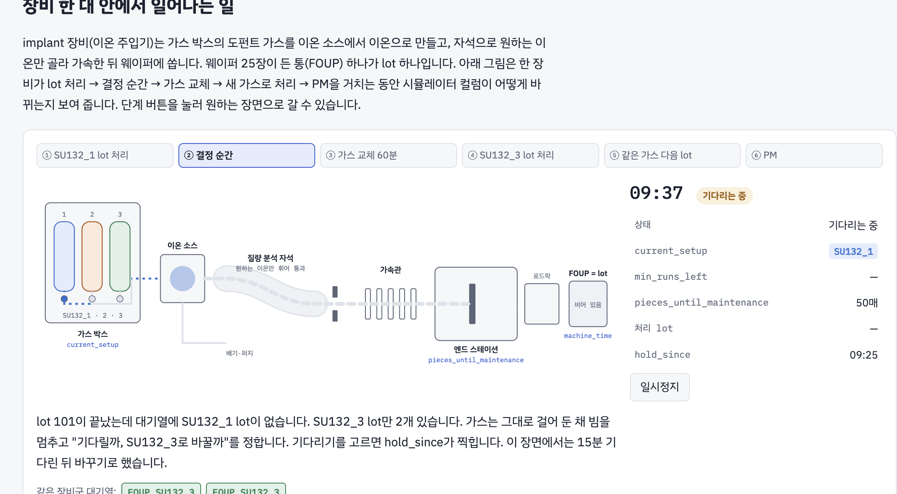
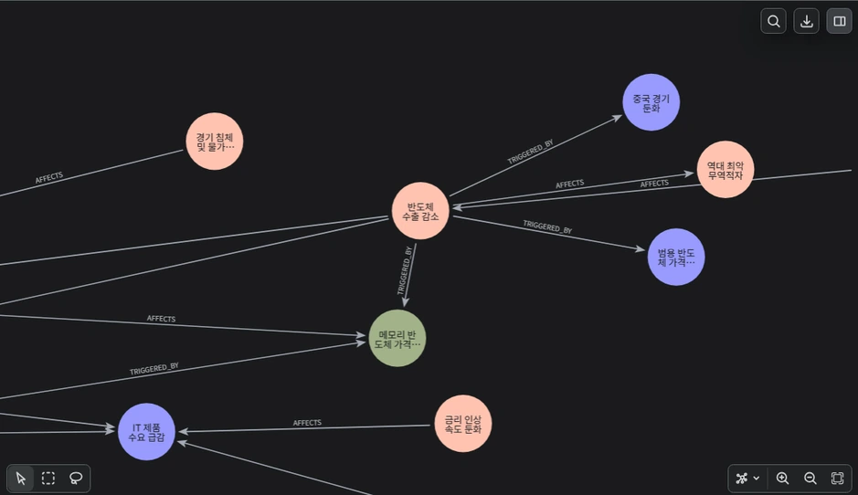

얼쑤! · AI 탈춤 게임
웹캠 한 대로 즐기는 AI 탈춤 게임
담당웹캠에서 가려지거나 화면 밖으로 나간 관절을 채워 주는 모델과, 몸 방향·체형이 달라도 같은 동작이면 같은 점수를 주는 채점기를 만들었습니다.
웹캠 한 대로 즐기는 AI 탈춤 게임
담당웹캠에서 가려지거나 화면 밖으로 나간 관절을 채워 주는 모델과, 몸 방향·체형이 달라도 같은 동작이면 같은 점수를 주는 채점기를 만들었습니다.

반도체 공정의 강화학습 정책 비교
담당공장 기록을 재생하는 장비군 단독 시뮬레이터를 구축하고, 가스를 바로 바꿀지 기다릴지 고르는 강화학습 실험을 설계했습니다. 고른 정책은 공장 전체 시뮬레이터에서 다시 검증했습니다.

온톨로지 지식 그래프 기반 멀티에이전트 시스템
담당데이터마다 맞는 도구로 정보를 추출하는 파싱 에이전트를 보완하고, Bull·Bear 에이전트가 토론 근거로 쓰는 온톨로지 지식 그래프를 구축했습니다.
리뷰와 계정의 관계를 그래프로 보고 팀 최종 탐지 모델을 구축했습니다. 지나치게 높은 점수에서 식별자 누수를 찾아 평가 기준도 바로잡았습니다.
반도체 Fab 물류 디지털 트윈을 직접 만들고, 강화학습을 어느 결정에 써야 이득인지 실험으로 검증했습니다.
희소 불량 데이터를 보완하기 위해 디지털 트윈 기반 가상 사출기를 구현하고, 그 위에서 검사 정책과 추가 센서의 효과를 비교했습니다.
판매·구매 기록으로 매장별 재고 흐름을 복원하고, 안전재고·재주문점 기반 자동 발주 프로토타입을 만들었습니다.
결제 위치와 방식을 생활 패턴으로 다시 정의해 고객을 군집화하고, 리워드 설계의 기준이 된 고객 페르소나를 만들었습니다.
측정 척도 설계와 Python 분석, 세 계열 심층 인터뷰를 맡아 AI 불안과 취업 불안의 관계를 조사했습니다.
서강대학교사회학 · 컴퓨터공학
안랩 ESG · 블록체인 서비스 기획블록체인 기반 일경험 프로그램에서 화장품 정품 인증·리워드 서비스 ‘Auri’ 팀 기획. NFT 인증과 고객 구매 이력을 연계한 맞춤 혜택 발급 흐름 제안.
경영데이터사이언스학회 INSIGHT · 14기 부회장데이터 분석·AI 프로젝트 및 학회 운영
신촌 연합 데이터·AI 해커톤 운영 · 문제 설계ESAA·ESC·INSIGHT·MATRIX 연합 해커톤의 은행 고객 이탈 예측·XAI 과제 설계. 베이스라인, 평가 기준, 채점 도구 준비.
전국민 AI 경진대회 · AI 루키 결선인사이트 팀 / 얼쑤! 모델·채점 개발, 자문 및 사용자 조사
딥러닝 · 그래프 신경망 · 이상 탐지 · 2026.05
사기 리뷰를 글 한 편의 문제가 아니라 여러 계정이 함께 움직이는 관계망의 문제로 보고, 그래프 신경망으로 탐지했습니다.
강화학습 · 디지털 트윈 · 실험 설계 · 2026.05–06
공장 물류가 레일형 OHT에서 자율이동로봇(AMR)으로 바뀔 때 생기는 교착·충전 문제를 시뮬레이터에서 다뤘습니다.
딥러닝 · 디지털 트윈 · 이상 탐지 · 2026.09–10
사출성형은 불량이 드물어 데이터를 더 모아도 학습할 불량 사건이 잘 늘지 않습니다. 실측만으로 답하기 어려운 운영 질문을 가상 사출기에서 시험했습니다.
데이터 분석 · 재고 모델링 · 프로토타입 · 2025.10
기초·기말 재고만 있어 중간 재고를 알 수 없던 주류 소매 데이터에서, 악성 재고와 재고 부족 문제를 함께 다뤘습니다.
데이터 분석 · 군집 분석 · 페르소나 설계 · 2026.03–04
카드 결제 데이터를 생활 패턴으로 해석해, 맞춤 리워드 설계에 쓸 고객 페르소나를 구성했습니다.
사회조사 · 설문 · 심층 인터뷰 · 2026.03–06
생성형 AI에 대한 불안이 전공과 AI 활용 역량에 따라 다르게 나타나는지, 설문과 인터뷰를 함께 분석한 혼합연구입니다.